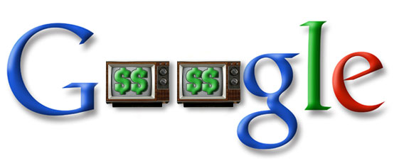

How Google Can Turn YouTube Into Another AdSense
I have previously discussed how the current InVideo ads on YouTube will ultimately fail. What can Google do to turn the most popular video distribution hub on the net into a money maker like text ads? Here are a few of my own ideas.

Related Video Clicks
Create a cost per click model on the recommended videos users face at the end of a clip and right side viewer. Mixing in a few relevant videos from sponsors ensures YouTube has the viewers full attention since they initiated the action rather than having the ad forced upon them. By charging advertisers for every click that comes off of other videos, similar to links from sponsored ads on AdSense, Google can leverage what they know best: connecting people with the content they are looking for. While any advertiser can post their own clip now, Google could offer more specific statistics and demographics such as how long people watched the video, age and gender breakdown of viewers, and even what keywords or actions brought the user to the video. All of this information will help advertisers hone their message for their specific audience.
Video Owner Controls Ads
The overlay ads currently in use by YouTube would be more effective if it wasn’t competing with the content. If publishers who wanted to monetize their content had more control over the ad insertion, than everyone would be a winner. For example, someone who does a weekly video blog might design their show to have a commercial break in the middle. The vlogger would mark where the commercial break is and Youtube could automatically splice in a dynamic ad on playback to fit the desired duration of their inventory. The content of the ad can be determined by a multitude of different information on the page including the title and description of the clip, user comments, tags, and even an audio to text conversion. Google would already be interested in transcribing audio in order to add to their huge search database so they can better index video contnet (Remember they did this with Google Video when it first launched). Different positions could be awarded different impression and click through rates. A quick ad in front, say less than 5 seconds, might be worth the least amount. An ad inserted at the end would be worth slightly more while the most coveted ad space would be in the middle of the clip where the user is the most engaged. Google limits the number of ad units that appear on a web page which could be applied to video based on length.
The YouTube AdSense model could go beyond click throughs and instead focus more on actions. For instance, clicking an ad would take the user to the advertisers web page. If the user clicked on another targeted area of that web page, the video owner who reffered the viewer to the advertiser could earn a little bit more money. These actions could be more than just clicking through to a web page, including subscribing to a channel, watching another video, or even leaving a comment! There are many interactions that occur on YouTube that Google can track and profit on.
Who Says It Has To Be Ads?
Content creators go to YouTube because that is where all the people are. Offering premium services is another route YouTube could take, appealing to the more serious video producers. Such perks to being a paid member might include offering your content in a higher quality, download options, highlighted attention in search results/related videos, or click through ads at the tail end of a video. People are desperate to stand out in the massive video community, so much so they would be willing to pay for special benefits similiar to Pro accounts on Flickr. Imagine a small movie maker is trying to sell his movie by soliciting the trailer on YouTube. At the end of a trailer could be a special interactive insert that would take the viewer to the movie makers store to buy the DVD or subscribe to the RSS feed for further updates. Google would then take a small fee for connecting a publisher with an audience member via an action.
In conclusion, there are many ways YouTube could be transformed from a money bleeder to a money maker. The online video site isn’t a colossal hit because it mimics television, but because it offers something different to the viewer. The InVideo ads are just a copy-cat idea from a current trend currently being exploited on regular TV channels. By focusing more on the unique strengths of online video, (interactivity, more precise feedback, and greater control of the user experience), YouTube could begin roping the advertisers in and paving the way for another high-flying success like AdSense.

I don’t know why Google doesn’t give this sort of control to at least their directors… I guess the average user doesn’t care but a video blogger definitely would want these features. And it could also give these bloggers a way to make some money off of YouTube. As I understand it (and trust me – I don’t… I’ve been ignoring the YouTube Ad stories) the profit from inVideo ads goes only to Google, right? No revenue sharing system a la Revver (unless through special agreement)?
Really good post though, some awesome thoughts on how Google could improve the ads.
Reply
[…] Google Blog Pic via Russell Heimlich 本站文章除注明转载外，均为本站原创编译 […]
Can other video providers use the same? Are these overlay ads only meant for flvs? Referring http://adsense.google.com/supp.....swer=73987. Wanted to check if the same can be applied to mp4 content also.
Reply
I imagine it doesn’t matter what format the video is so long as you’re using a Flash player to control it. Flash can handle FLV’s and MP4 videos. The overlays are controlled via Flash so I don’t see why not.
[…] via Russell Heimlich 本站文章除注明转载外，均为本站原创编译 […]
[…] Pic via Russell Heimlich […]
Is there any link for the demonstration for ad integration for video content publishers?
Reply